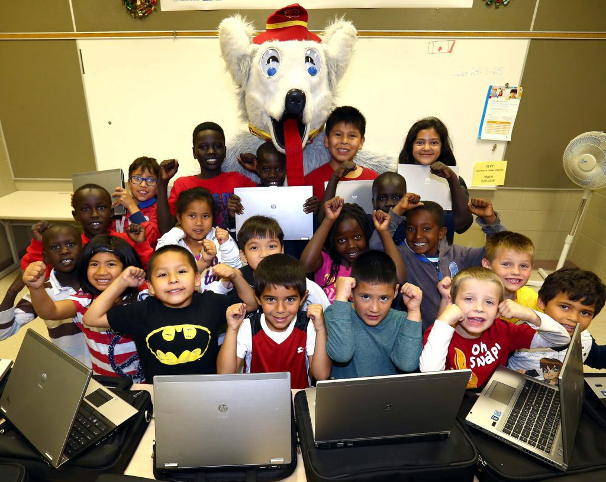
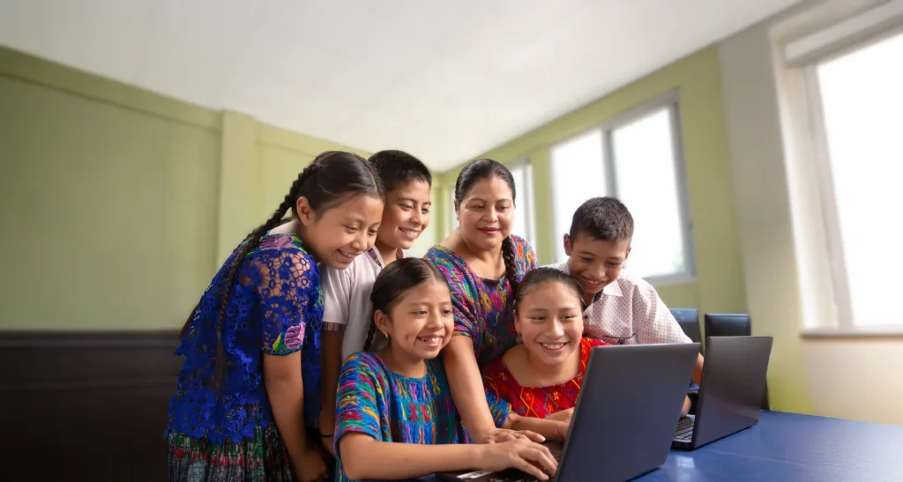

El plan de entregas en la Campaña de Equipos Reacondicionados representa un paso estratégico para nuestra propuesta de asistencia informática barrial. Mediante el traspaso de computadoras y monitores recuperados por voluntarios, logramos diseñar un entorno de inclusión directa que permite a los vecinos acceder a tecnología de calidad, preparándolos eficientemente para las demandas formativas actuales.
Ante las marcadas exclusiones en el acceso a hardware comercial, este reparto brinda herramientas críticas para que las familias puedan estudiar, producir y conectarse.
Los beneficiarios participan activamente en charlas de inducción de software y configuraciones básicas de sistemas operativos de código abierto. Aprenden a mantener estables los componentes de hardware donados, optimizar el rendimiento de aplicaciones livianas y estructurar carpetas personales seguras para organizar las tareas escolares de los chicos pertenecientes al hogar familiar.
Esta iniciativa no solo abarata el presupuesto de compra de las familias asistidas, sino que también promueve activamente el acceso a la educación reduciendo drásticamente la brecha digital por falta de herramientas físicas.
El proceso de adjudicación requirió un esfuerzo conjunto entre asistentes e instituciones para trazar mapas de necesidad y entregar aquellos equipos listos o probados rigurosamente en los talleres desde hace tiempo.
Tras intensas jornadas de ensamblaje y embalaje en las cajas, el equipamiento quedó completamente operativo y listo para recibir las demandas de uso de hogares familiares y salones comunitarios.
La comisión barrial celebra la inauguración de este nuevo sistema que transforma residuos recuperados en verdaderas oportunidades de integración digital y crecimiento comunitario duradero.

La comisión barrial celebra la inauguración de este nuevo sistema que transforma residuos recuperados en verdaderas oportunidades de integración digital y crecimiento comunitario duradero.
La adecuación de la línea de donaciones incluyó la entrega de veinte puestos de computadoras totalmente renovados con componentes internos estables y discos de estado sólido. Se implementó un kit de accesorios completo utilizando periféricos de alta respuesta que garantiza una operatividad de datos fluida durante las jornadas de aprendizaje de herramientas ofimáticas básicas.
Los operadores de las distintas manzanas asumieron la responsabilidad de coordinar las entregas de material y soporte técnico vecinal dentro de la campaña solidaria. Esta experiencia comunitaria les permite aplicar conceptos prácticos de reparación, gestión de stock de donaciones y soporte de software en un escenario real, sumando un valor incalculable a su perfil técnico antes de sumarse a las empresas informáticas de la provincia.
Una de las metas más ambiciosas de esta red es extender su alcance más allá de los hogares individuales del barrio popular. Se planifica utilizar este remanente de equipos para armar aulas compartidas en bibliotecas populares dirigidas a estudiantes de la zona, promoviendo de este modo una verdadera democratización tecnológica y comunitaria que fortalezca el estudio escolar mediante la donación directa de material gratuito.
A diferencia de los programas de entrega de equipamiento gubernamentales tradicionales, este tendido prioriza el seguimiento técnico posterior para garantizar el ciclo de vida útil del hardware. Esto enseña a los futuros usuarios a trabajar bajo estándares responsables de cuidado de sus máquinas, preparándolos para resolver problemas menores con guías sumamente creativas, autónomas y económicamente viables para cualquier tipo de familia organizada.
El equipo técnico diseñó una nueva grilla de seguimiento que integra la asistencia remota de los equipos en tareas de soporte del usuario de forma comunitaria. Los coordinadores destacan que contar con estos recursos tecnológicos estables incrementa notablemente el rendimiento escolar de los chicos, reduciendo el ausentismo y mejorando el acceso a las plataformas oficiales de educación obligatoria.
Para asegurar la sustentabilidad del servicio a lo largo del tiempo, se firmaron convenios de donación con empresas tecnológicas locales que entregarán periódicamente sus computadoras dadas de baja. Este circuito de reciclaje continuo garantiza un suministro constante de hardware para que las próximas camadas de técnicos voluntarios puedan seguir armando equipos completos, manteniendo la campaña actualizada frente a las crecientes demandas de inclusión digital.
El éxito alcanzado en la Donación de Equipos Reacondicionados demuestra que la articulación entre organización social, educación pública y sustentabilidad ambiental puede generar resultados extraordinarios. Este proyecto no es simplemente una caja con computadoras clonadas; es un testimonio vivo del potencial de nuestros vecinos cuando disponen de las herramientas necesarias y la convicción comunitaria para construir canales de inclusión para su propio porvenir social.
Queremos manifestar un sincero agradecimiento a cada una de las personas que hicieron posible esta red institucional. Desde los operarios que cargaron los bultos necesarios hasta las familias que abrieron sus puertas para las computadoras, cada grano de arena fue fundamental para edificar un sistema que marcará un antes y un después en nuestra querida organización vecinal.
El plan de la fundación contempla la posibilidad de replicar esta exitosa metodología de donación en otros asentamientos de la provincia que carecen de recursos informáticos básicos. Creemos firmemente que el conocimiento debe compartirse, y nuestro grupo de técnicos avanzados está completamente capacitado para asesorar a otros barrios en el montaje de sus propios talleres.
La infraestructura popular tiene la misión histórica de brindar soluciones prácticas a las problemáticas reales de la sociedad actual. Con la consolidación de estos espacios, reafirmamos nuestro compromiso inquebrantable con la soberanía tecnológica y la equidad social, demostrando que el acceso a internet se construye desde abajo, con esfuerzo compartido, convicción democrática y una mirada profundamente solidaria hacia el porvenir de nuestro amado pueblo argentino.
Cada computadora que se enciende en este nodo social representa una ventana abierta hacia la educación digital, la investigación científica y la creación de proyectos innovadores. Invitamos a toda la comunidad a acercarse, conocer nuestras instalaciones y sumarse a las próximas campañas de donación de hardware, porque el futuro digital de nuestros hogares es una construcción colectiva que nos convoca a todos por igual.

Si formás parte de una empresa o querés donar un equipo particular que ya no utilices en tu casa, podés contactarte directamente con la secretaría del programa. Nuestro taller recibe monitores funcionando, teclados, cables de alimentación y componentes internos que puedan ser recuperados por los técnicos para seguir expandiendo este maravilloso proyecto de informática popular.
Nuestra meta para el próximo semestre es duplicar la cantidad de computadoras operativas y comenzar a abastecer de software educativo a las escuelas primarias de la zona. Este círculo virtuoso no se detiene y demuestra que la economía circular es el camino correcto para construir un desarrollo tecnológico que sea verdaderamente inclusivo, socialmente justo y respetuoso de los recursos naturales de nuestro planeta.